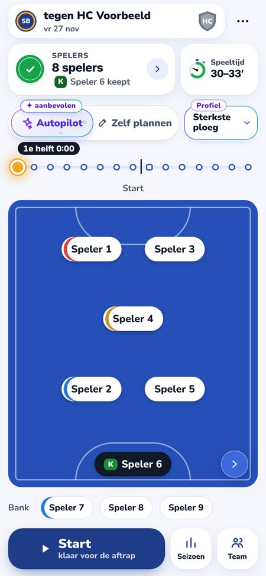
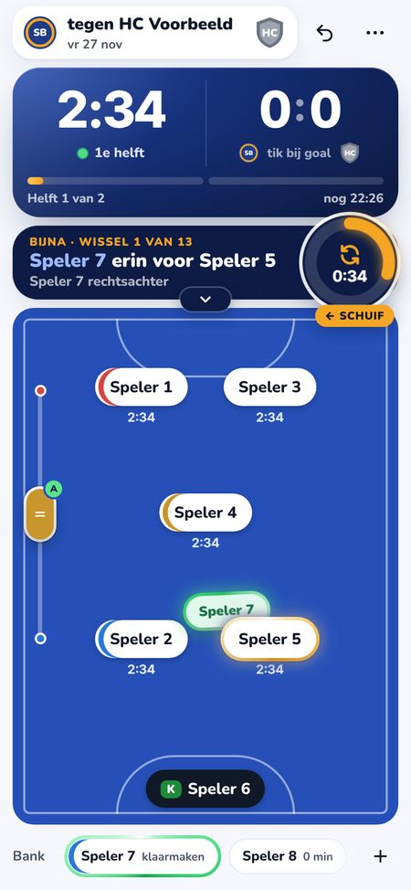

SpaBo Coach op je telefoon
De wissel-app voor de staf langs het veld. Eerlijk wisselen zonder gepuzzel: de app rekent het voor je uit. Werkt zonder internet en alles blijft op je eigen telefoon.
Open de app ›Op je iPhone
In Safari, in een minuut. Opende je deze link in WhatsApp? Kies eerst Open in Safari.
- Open de app in Safari
- Tik op •••naast de adresbalk
- Tik op Deel
- Tik op Toon meer
- Zet op beginscherm
- Voeg toeOpen als webapp aan
Op Android
In Chrome.
- Tik op ⋮rechtsboven
- App installerenof Toevoegen aan startscherm
- Installeren
De eerste keer instellen
Vier dingen, één keer per seizoen.
Ga naar Team en vul de naam en de spelvorm in: veld of zaal, aantal spelers, met of zonder keeper, de opstelling (bijv. 2-1-2) en hoeveel periodes van hoeveel minuten.
Vul je spelers in met wat ze goed kunnen. Zo rekent Autopilot een goede opstelling door. Dit staat achter een pincode.
Op gelijke speeltijd, of met wat meer focus op de sterkste opstelling. Bij beide krijg je het sterkste wisselplan.
Zet je wedstrijden in de agenda bij Seizoen. De app maakt automatisch de WhatsApp-berichten om ouders en spelers te informeren, met taken en verzameltijd.
Op de wedstrijddag
Minder gedoe met wisselen, meer bezig met het spel.


- Meld aan wie er isEn wie er keept, zoals vooraf in het team afgesproken
- Tik Start bij de aftrapJe ziet steeds de volgende wissel; de app piept als het tijd is
- Gaat het anders? Sleep zelfAutopilot rekent de rest van de wedstrijd weer door
Waarom deze app
- Geluid aan voor de piep bij een wissel.
- Maak af en toe een back-up bij Team → Gegevens.
- Voor de staf: laat de speelkracht niet zien aan ouders of spelers.
Over deze app
- Van coaches, voor coaches. Gratis en geen commerciële app. Niet verkopen, doorverkopen of er geld voor vragen.
- Gebruik op eigen risico. De app doet voorstellen; jij beslist langs het veld. Er is geen garantie dat alles foutloos werkt of dat de app blijft bestaan.
- Je gegevens blijven op je telefoon. Niemand anders kan ze zien, ook de maker niet. Maak af en toe zelf een back-up.
- Zorgvuldig met kinderen. Gebruik voornamen, houd de beoordelingen voor de staf en volg de privacyregels van je club.